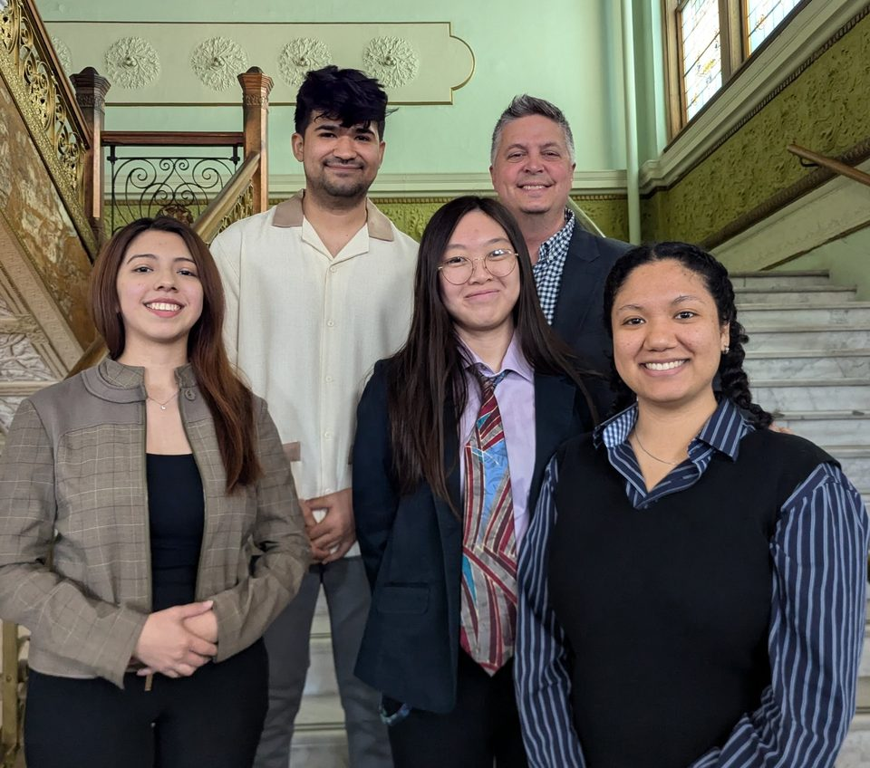
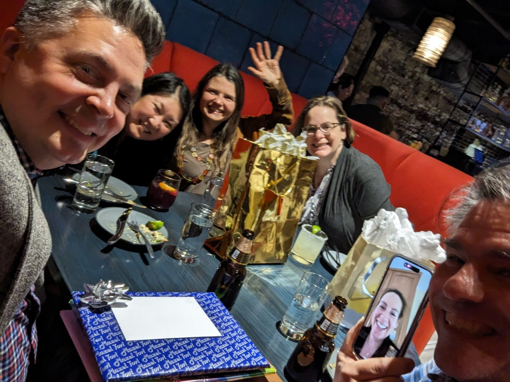
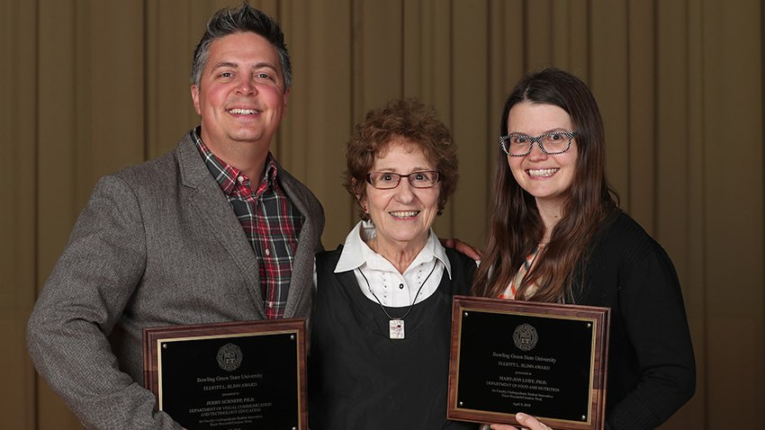
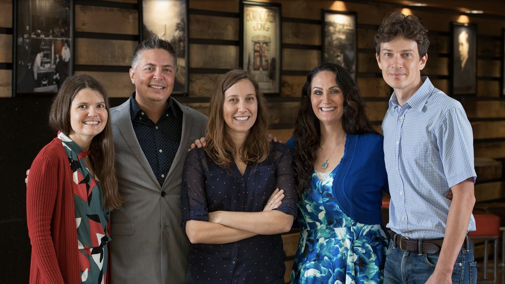

Jerry Schnepp
Professor of Computer Science and Robert Miner Endowed Chair of Computer Science and Cyber Security at Roosevelt University, Chicago.
Author
Cultivating Academic Leadership: A Collaborative Approach
Emerald Publishing, forthcoming
About
Dr. Jerry Schnepp is Professor of Computer Science and the Robert Miner Endowed Chair of Computer Science and Cyber Security at Roosevelt University. He leads initiatives to advance computing education, develop innovative academic programs, and expand opportunities for student research and experiential learning.
His research spans artificial intelligence, human-computer interaction, learning science, and the scholarship of teaching and learning. He focuses on Learner Experience Design (LXD), human-centered AI, computational thinking, and new approaches to teaching and assessment. He is especially interested in how emerging technologies can make learning more personalized, engaging, and effective.
Dr. Schnepp is President of the International Society for Exploring Teaching and Learning (ISETL), which advances innovative, evidence-based teaching across disciplines and institutions. He is also a co-author of Cultivating Academic Leadership: A Collaborative Approach (Emerald Publishing). The forthcoming book explores collaborative ways to develop and support academic leaders.
Before joining Roosevelt, he chaired the Department of Computer Science at Judson University. Earlier, he was an Associate Professor at Bowling Green State University, where he founded and directed the Collab Lab. The Collab Lab is an interdisciplinary innovation center dedicated to collaborative problem-solving, design thinking, and experiential learning.
Throughout his career, Dr. Schnepp has mentored students and faculty, fostered interdisciplinary collaboration, and connected academic research with real-world challenges. His awards include Roosevelt University's Mentor Award, BGSU's Undergraduate Faculty Mentor of the Year Award, and the Faculty Excellence Award from the Association of Technology, Management, and Applied Engineering.

- Education
- Ph.D., Computer Science, DePaul UniversityM.S., Human-Computer Interaction, DePaul UniversityB.S., Communication, University of Illinois Chicago
- Editorial
- Associate Editor, International Journal of Teaching and Learning in Higher Education
- Human-AI collaborationHow students and teachers work alongside AI, from personalized learning plans to AI advising tools.
- AI ethics, policy, and lawThe ethical and legal questions AI raises for workers, organizations, and creators, and AI policy in higher education.
- Learner Experience DesignUser experience research methods, applied to teaching, so faculty can design courses around real students.
- STEM and computational thinkingCreative coding and robotics, including an art-and-Arduino summer camp at the Toledo Museum of Art.
- Online assessmentPoint Barter, a quiz system that lets students trade points for hints.
- Mobile experiential learningEASEL, a mobile platform that prompts students to reflect during field experiences.
- Novel interfacesSing N Sketch, a touchscreen app where your voice controls the brush.
- Sign language synthesisSoftware that animates American Sign Language, built with an international team.
Recent writing
All publications
- ForthcomingCultivating Academic Leadership: A Collaborative ApproachBook, Emerald Publishing. With L. Hanasono, W. J. Koolage, M. Ludy, M. E. Radina, and J. A. Sheffer.
- 2026A framework for ethical AI-HRM development and useAI and Ethics. With J. Davidson, H. Buttrick, and A. Gupta.
- 2026Specialized design heuristics that optimize interactions for older adultsHCI International 2026 Posters, Springer. With Y. K. Desta.
- 2025Reframing and reclaiming the dirty words of academic leadershipThe Department Chair, 36(1). With M. E. Radina, J. A. Sheffer, M. Ludy, W. J. Koolage, and L. Hanasono.
Recent talks
All talks and slides- Oct 2026Building mission-aligned AI policy at an HSIPoster, AAC&U Conference on AI and Higher Education, Atlanta.
- Aug 2026Undergraduate research immersion: A two-week micro-internship experienceCRA NAIRR Pilot Expansion Conference for Minority Serving Institutions, Portland, OR.
- Apr 2026Exploring AI-enhanced learning with vibe coding: A computer science micro-internship projectNational Conference on Undergraduate Research, Richmond, VA.
- Feb 2026Building a department-wide AI policy: A collaborative workshopAcademic Chairpersons Conference, Atlanta.
Awards

- 2026Mentor AwardRoosevelt University
- 2022Undergraduate Faculty Mentor of the YearBowling Green State University
- 2021Top Overall Article, Gerald F. Day Excellence in AuthorshipInternational Technology and Engineering Educators Association, for “Building Problem-Solving Skills through STEAM”
- 2018Elliott L. Blinn AwardFor faculty-undergraduate innovative basic research and creative work, Bowling Green State University
- 2018Faculty Excellence AwardAssociation of Technology, Management, and Applied Engineering
Leadership and service

- 2025–27President, International Society for Exploring Teaching and LearningPreviously president-elect (2025), conference chair (2023–2025), and board member (2020–2025)
- 2027–30Advisory Board, Academic Chairpersons Conference
- 2024–26Associate Editor, International Journal of Teaching and Learning in Higher Education
- 2024–26Faculty Senate, Roosevelt University
- 2021Review panelist, National Science FoundationComputer and Information Science and Engineering